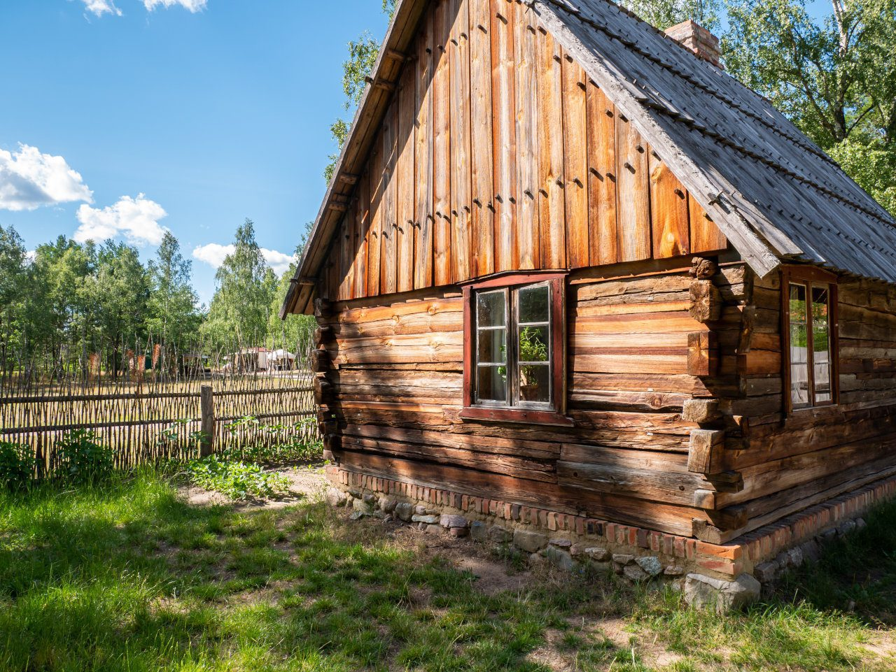

Absolutnie obowiązkowym punktem zwiedzania okolic Jeziora Wdzydze jest składające się z ponad 50 budynków Muzeum – Kaszubski Park Etnograficzny. Obejrzysz tu wiejskie domostwa z okresu XVII – XX w., przeniesione i ponownie złożone we Wdzydzach Kiszewskich z różnych zakątków Kaszub, Borów Tucholskich i Kociewia. Założony w 1906 r. park etnograficzny był pierwszym w Polsce muzeum na wolnym powietrzu.